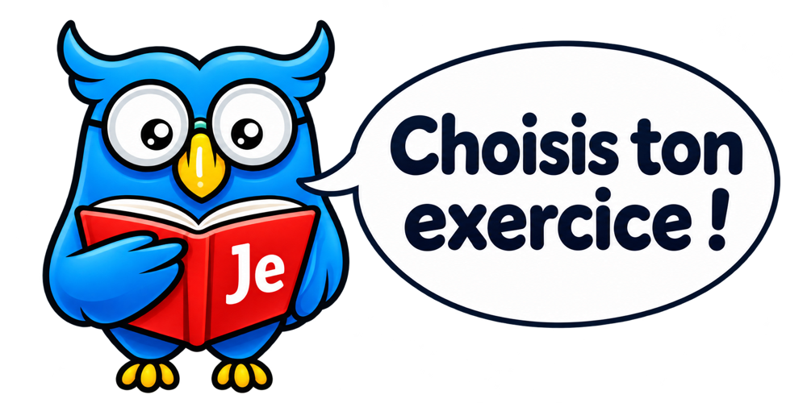
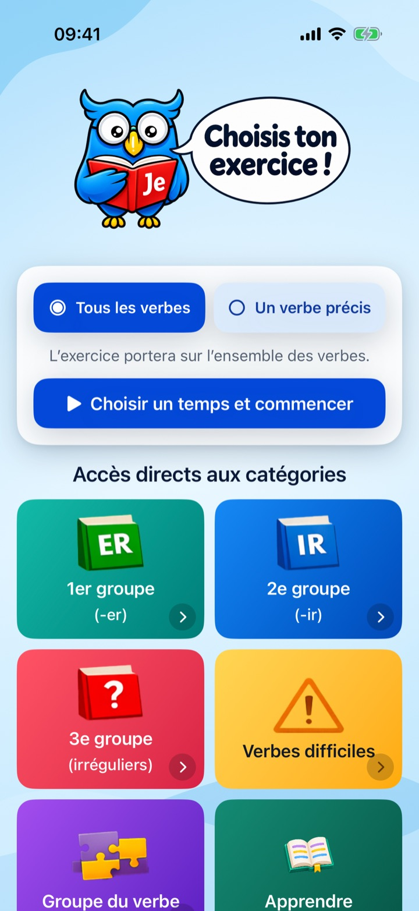
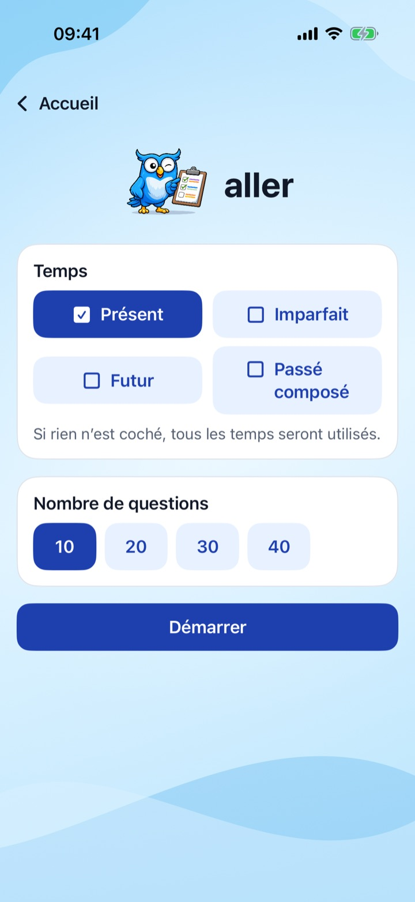
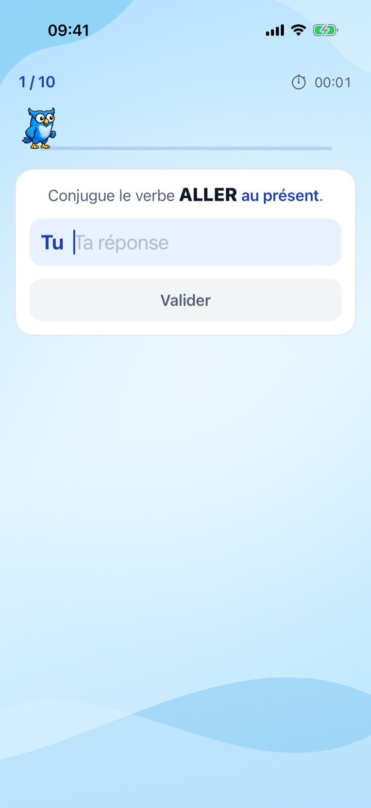
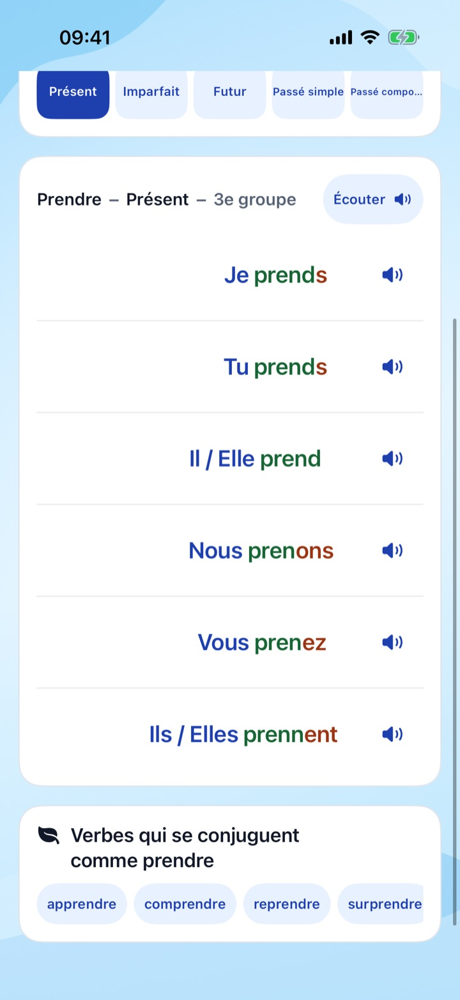
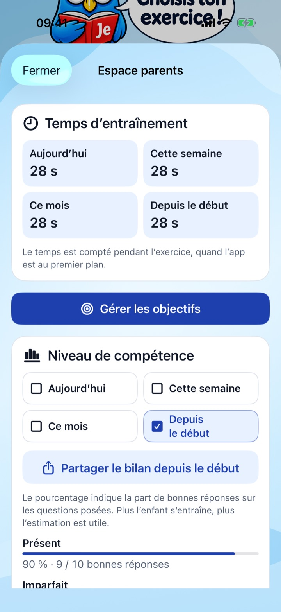
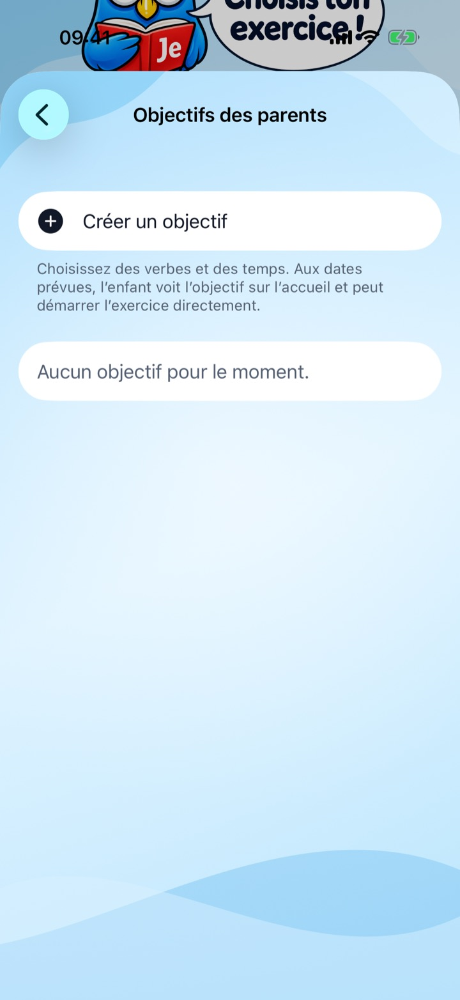

01 · Les bases
Les verbes en -er
Pratiquer les verbes réguliers du premier groupe.
Apprendre · S’entraîner · Progresser
Avec Ma conjugaison, les enfants s’entraînent à leur rythme, comprennent les formes verbales et voient leurs progrès. Les parents disposent d’un espace dédié pour accompagner chaque étape.

Une petite séance, un verbe à la fois.
Un grand pas vers la confiance.
Pensée pour accompagner les apprentissages de conjugaison à l’école primaire.
Le parcours de l’enfant
L’enfant peut suivre son envie ou se concentrer sur une notion précise. Les réglages restent simples et chaque réponse l’aide à avancer.
Pratiquer les verbes réguliers du premier groupe.
Reconnaître et conjuguer les verbes du deuxième groupe.
Se familiariser avec les verbes irréguliers.
Reprendre les verbes qui demandent un peu plus de pratique.
Apprendre à reconnaître les groupes en jouant.
Consulter les conjugaisons et découvrir des verbes de la même famille.
Voir, écouter, retenir. La rubrique Apprendre présente les formes d’un verbe et propose leur lecture audio pour les mémoriser plus facilement.
Présent · Imparfait · Futur · Passé composé · Passé simpleDans l’application
Une interface illustrée, pensée pour que l’enfant trouve rapidement son prochain exercice.




✳ L’espace parents
Un tableau de bord aide à comprendre le parcours de l’enfant et à lui proposer un entraînement adapté, en gardant le plaisir d’apprendre au centre.


Un accès simple
Un essai gratuit de 30 jours permet de découvrir les fonctions de suivi. Ensuite, leur accès repose sur un achat unique, sans renouvellement automatique. Les exercices de conjugaison restent gratuits.
Besoin d’un coup de main ?
Une question sur un exercice, l’accès parents ou une suggestion de verbe ? Écrivez-nous, nous vous répondrons avec plaisir.
Oui. Les exercices de conjugaison restent gratuits. L’accès aux fonctions de l’espace parents est offert pendant 30 jours, puis disponible par achat unique.
Dans l’application, ouvrez la rubrique Parents puis Version complète et choisissez « Restaurer mes achats » avec le compte Apple utilisé pour l’achat.
Pour proposer un verbe, utilisez la fonction « Suggérer un verbe » dans l’application. Pour un problème technique, écrivez-nous en précisant si possible le modèle de l’appareil et la version d’iOS.